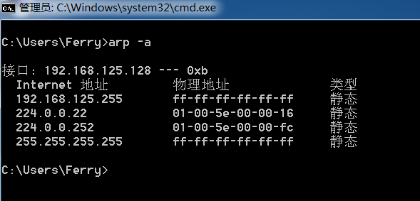

ARP欺骗原理及实现
1 ARP协议
1.1 基础知识
在以太网协议中规定，同一局域网中的一台主机要和另一台主机进行直接通信，必须要知道目标主机的MAC地址。而在TCP/IP协议中，网络层和传输层只关心目标主机的IP地址。这就导致在以太网中使用IP协议时，数据链路层的以太网协议接到上层IP协议提供的数据中，只包含目的主机的IP地址。于是需要一种方法，根据目的主机的IP地址，获得其MAC地址。这就是ARP协议要做的事情。所谓地址解析（address resolution）就是主机在发送帧前将目标IP地址转换成目标MAC地址的过程。 – Extracted from WikiPedia.
通俗点说，在局域网中通信时使用的是MAC地址，而不是常见的IP地址。所以在局域网的两台主机间通信时，必须要知道对方的MAC地址，这就是ARP协议要做的事：将IP地址转换为MAC地址。
从以太网帧来看，以太网帧分为：
- 以太网首部
- 上层数据部分
- 以太网尾
在物理层传输的数据都是使用以太网帧来封装起来传输的（通俗的说就是在数据包头加上以太网首部，数据包尾加上以太网尾），而网络传输是分层进行的，也就是物理层只处理物理层的数据，对于以太网帧中的上层数据部分并不关心。
在以太网帧中，以太网首部中存放了目的主机的MAC地址和源主机的MAC用于在以太网中传输数据。所以，在以太网通信中，只知道对方的IP地址是不可以通信的，因为IP地址属于第三层（网络层）的地址，对于物理层的以太网帧来说IP地址属于上层数据部分，以太网是无法识别的，所以就要使用ARP协议获取到对方的MAC地址进行通信。
1.2 工作原理
举例：现在有两台处于同一局域网的主机A、B。
| 主机 | IP地址 | MAC地址 |
|---|---|---|
| A | 192.168.1.1 | 0A-11-22-33-44-01 |
| B | 192.168.1.2 | 0A-11-22-33-44-02 |
现在主机A要和主机B通信，那么根据上面的介绍可以知道，主机A仅有主机B的IP地址是不可以通信的，还要知道主机B的MAC地址，下面介绍主机A是如何通过ARP协议获取主机B的MAC地址的：
- 第1步：根据主机A上的路由表内容，IP确定用于访问主机B的转发IP地址是192.168.1.2。然后A主机在自己的本地ARP缓存中检查主机B的匹配MAC地址。
- 第2步：如果主机A在ARP缓存中没有找到映射，它将询问192.168.1.2的硬件地址，从而将ARP请求帧广播到本地网络上的所有主机。源主机A的IP地址和MAC地址都包括在ARP请求中。本地网络上的每台主机都接收到ARP请求并且检查是否与自己的IP地址匹配。如果主机发现请求的IP地址与自己的IP地址不匹配，它将丢弃ARP请求
- 第3步：主机B确定ARP请求中的IP地址与自己的IP地址匹配，则将主机A的IP地址和MAC地址映射添加到本地ARP缓存中。
- 第4步：主机B将包含其MAC地址的ARP回复消息直接发送回主机A。
- 第5步：当主机A收到从主机B发来的ARP回复消息时，会用主机B的IP和MAC地址映射更新ARP缓存。本机缓存是有生存期的，生存期结束后，将再次重复上面的过程。主机B的MAC地址一旦确定，主机A就能向主机B发送IP通信了。
了解ARP协议的工作原理后可以分析出其存在一个严重的安全问题：
在ARP回复时，发送请求包的主机A并不会验证ARP回复包的真实性，也就是不能判断回复主机A的是不是主机B。由此引出一个局域网攻击方式ARP欺骗。
2 ARP欺骗
2.1 ARP欺骗
举例：
| 主机 | IP地址 | MAC地址 |
|---|---|---|
| A | 192.168.1.1 | 0A-11-22-33-44-01 |
| B | 192.168.1.2 | 0A-11-22-33-44-02 |
| C | 192.168.1.3 | 0A-11-22-33-44-03 |
- 1.主机A要和主机C通信，主机A发出ARP包询问谁是192.168.1.3?请回复192.168.1.1。
- 2.这时主机B在疯狂的向主机A回复，我是192.168.1.3，我的地址是0A-11-22-33-44-02。
- 3.由于ARP协议不会验证回复者的身份，造成主机A错误的将192.168.1.3的MAC映射为0A-11-22-33-44-02。
2.2 ARP欺骗分类
- 1.主机欺骗：欺骗对象为主机。
- 2.网关欺骗：欺骗对象为网关，可以获得其他主机的进流量。
2.3 ARP攻击的危害
- 1.造成局域网中的其他主机断网。
- 2.劫持局域网中其他主机或网关的流量，获取敏感信息等。
3 ARP欺骗实现
3.1 使用“轮子”
已有轮子有：
- arpspoof
- ettercap
- ……
接下来开始实验。
网络拓扑环境：
网关：win10 192.168.177.2
攻击者主机：kali linux ip:192.168.177.128
受害者主机：win7 ip:192.168.177.129
未攻击前受害者主机状态：

攻击机开始前状态：
1 | |
开始攻击。
通过ARP欺骗，建立 靶机–>kali攻击机–>网关的连接
首先使用ettercap -G指令启动图形化界面
点击√，进入如下页面：
点击搜索受害主机。
发现目标，将网关添加到target1，目标添加到target2.
加载remote_broser插件
选择远程攻击模块：

进入靶机：
arp欺骗成功。
- 自动加载靶机图片
1 | |
会出现一个黑窗口。
3.2 自己编写程序
这一部分后续有时间会更新